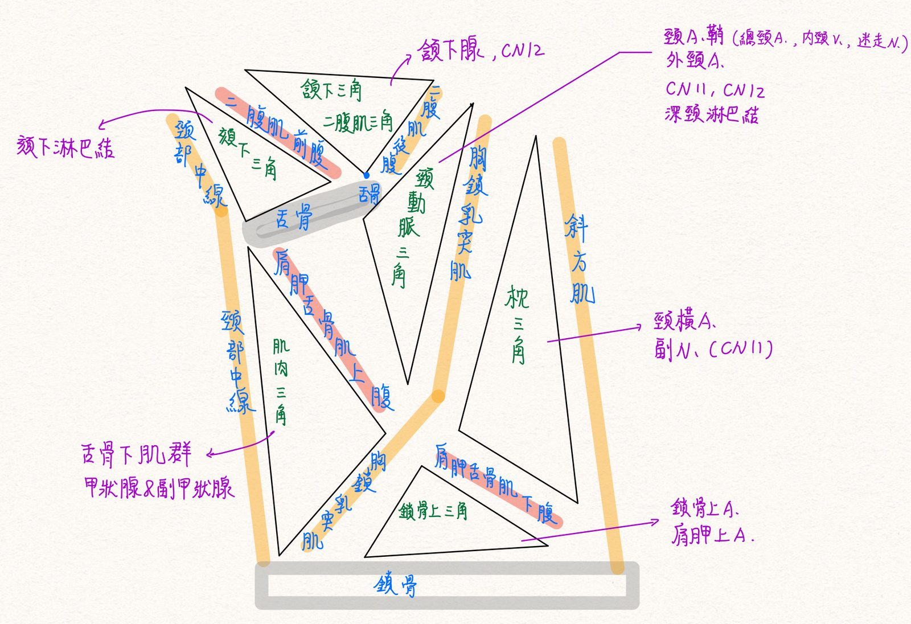
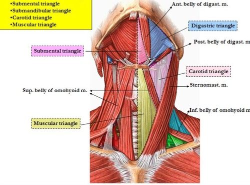
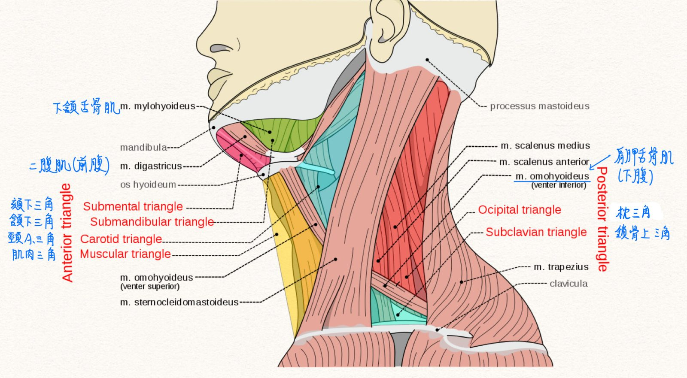
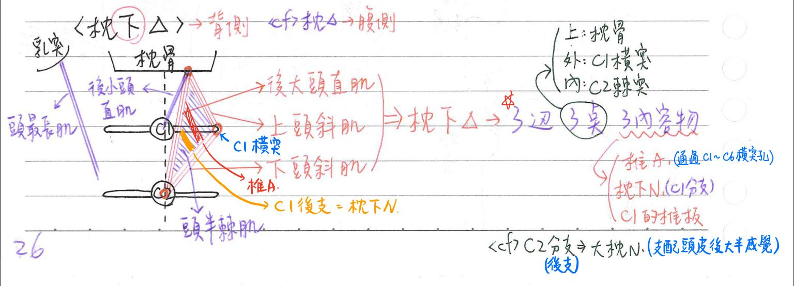
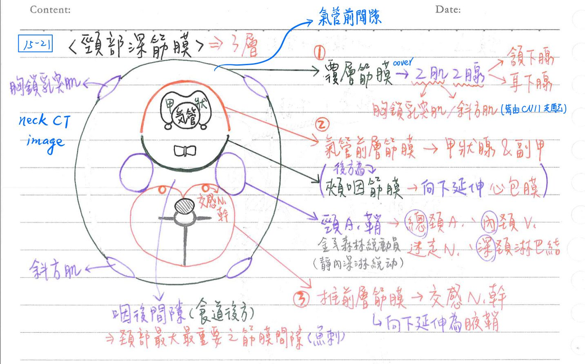

🔼 頭頸部的三角們
三角們的總圖




- 枕下三角圖要背熟：(補充一下趙內文沒提到的考點)
- ★頭最長肌：附著於顳骨乳突
- ★★[109-2]小後頭直肌：附著於C1棘突
[重點]枕下三角+頸三角們
| Name | 界線 | 頂點 | 內容物 | 備註 |
|---|---|---|---|---|
| 前三角 | 前：頸部中線 後：胸鎖乳突肌(SCM) 上：下頷骨 | 分為頦下三角、二腹肌三角、頸動脈三角、肌肉三角 | 胸鎖乳突肌(SCM)：為前、後三角分界 | |
| 頦下三角(submental) | 前：頸部中線 外：二腹肌(前腹) 下：舌骨 | 頦下淋巴結 | ||
| 二腹肌三角/頷下三角 | 上：下頷骨 前：二腹肌前腹(CN5-3) 後：二腹肌後腹(CN7) | ★頷下腺 CN12 | ||
| 頸動脈三角 | 上：二腹肌(後腹) 下：★肩胛舌骨肌(上腹) 後：胸鎖乳突肌 | ★頸動脈鞘(含總頸A、內頸V、迷走N、深頸淋巴結) 外頸A. CN11, CN12 | ||
| 肌肉三角 | 前：頸部中線 上：★肩胛舌骨肌(上腹) 下：胸鎖乳突肌 | 舌骨下肌群 甲狀腺 副甲狀腺 | ||
| 後三角 | 前：胸鎖乳突肌(SCM) 後：斜方肌 下：鎖骨 | 可分成枕三角、鎖骨上三角 | ||
| 枕三角 | 前：胸鎖乳突肌(SCM) 後：斜方肌 下：肩胛舌骨肌下腹 | 頸橫A(transverse cervical) ★副神經(CN11) | ||
| 鎖骨上三角(supraclavicular) | 前：胸鎖乳突肌(SCM) 後：肩胛舌骨肌下腹 下：鎖骨 | 鎖骨上A.、肩胛上A. | ||
| 枕下三角(suboccipital) | 外上界：上頭斜肌 外下界：下頭斜肌 內界：★大後頭直肌 頂(roof)：★頭半棘肌 | 外頂點：C1橫突 下頂點：★C2棘突 上頂點：枕骨 | ★★★★椎A C1後支=★★枕下N(suboccipital n.) ★C1之椎板(椎弓後半) | ★大枕N(greater occipital n.)=C2的後枝，於頭半棘肌下緣穿出向上行(沒有通過枕下三角內部) 大枕N→支配頭皮後大半感覺 |
頸部深筋膜(deep fascia)
- 覆層筋膜(investing layer)=頸部包裹筋膜(investing fascia)：包住整個頸部
- 包覆胸鎖乳突肌、★斜方肌、頷下腺&耳下腺，並特化為莖乳突下頷韌帶(stylomandibular l.)
- ★氣管前層筋膜(pretracheal layer)：包住甲狀腺、副甲狀腺
- 其後方為頰咽筋膜(buccopharyngeal fascia)，向下延伸並綿延至心包膜
- ★椎前層筋膜(prevertebral layer)：包住交感神經幹
- 向下延伸為腋鞘(axillary sheath)
- ★頸動脈鞘(carotid sheath)：
- 內容物：總頸A、內頸V、迷走N、深頸淋巴結
- 肌筋膜間隙(fascial space)：
- 咽後間隙(retropharyngeal space)：頸部最大且最重要之筋膜間隙
- 位於頰咽筋膜&椎前筋膜之間
- 為頸部延伸入胸腔食道後方之潛在間隙
- 氣管前間隙：位於覆層筋膜&氣管前筋膜之間
- 頰間隙：頰肌與嚼肌(=咬肌)之間隙
- 翼下頷間隙(pterygomandibular space)：翼肌&下頷骨枝部之間隙
- 顴顳間隙(zygomaticotemporal space)：顳肌&顴骨弓之間隙
- 口腔感染：易擴及頰間隙、翼下頷間隙、顴顳間隙
- 咽後間隙(retropharyngeal space)：頸部最大且最重要之筋膜間隙

📖 書本補充：與筆記不同或筆記沒寫到的地方
⚠️
以下為對照書本後整理，筆記原文未更動。書中沒有頸部前、後三角（頦下、二腹肌、頸動脈、肌肉、枕、鎖骨上三角）的專節，只講了枕下三角、聽診三角與頸深筋膜。
枕下三角（p.137）
- 邊界（書）：內側＝頭直後大肌；外側＝頭上斜肌；下面＝頭下斜肌；頂部＝頭半棘肌；底部＝寰枕後膜（posterior atlanto-occipital membrane）。
- 筆記 vs 書：筆記把「C1 之椎板（椎弓後半）」列在內容物；書的內容物只有枕下神經（C1 背枝）與椎動脈兩項，三角的底寫的是寰枕後膜。
- 書列的「鄰近構造」（不在三角內）：枕大神經（C2 背枝）、枕動脈、頭直後小肌。
- 書的提示：枕大、枕下神經來自脊神經的背枝；枕小神經是頸神經叢的分支（腹枝）（103-2-6）。
- 枕大神經會穿過頭半棘肌和斜方肌（但不支配它們）再成為皮神經（104-2-24）；113-1-28 的答案是它從枕下三角的下緣穿出（與筆記「頭半棘肌下緣穿出、沒有通過三角內部」相符）。
- 圖 28 補充：枕下神經是運動神經、枕大神經是皮神經。
聽診三角（p.133）
- 筆記沒提。位置：肩胛骨內側緣、斜方肌下外側、闊背肌上緣所圍成的區域（103-2-26）。
頸部深筋膜（p.548）
- 包圍層：包圍頸部、胸鎖乳突肌和斜方肌。
- 椎前層：包覆脊柱及相關肌肉（頭長肌、頸長肌）、斜角肌和背部深層肌肉；延伸到腋窩成為腋鞘，包住腋動脈、腋靜脈和臂神經叢。
- 筆記 vs 書：頸動脈鞘內容物，筆記寫總頸A、內頸V、迷走N、深頸淋巴結；書寫總頸和內頸動脈、內頸靜脈、迷走神經（多了內頸動脈，沒列淋巴結）。
- 筆記 vs 書：氣管前層，筆記寫包住甲狀腺、副甲狀腺；書寫包住喉部、氣管、食道和甲狀腺等。
- 書的提示：
- 前、中斜角肌附著在第一肋骨，後斜角肌附著在第二肋骨。
- 臂神經叢由前、中斜角肌之間穿過。
- 總頸動脈分支後，頸動脈鞘沒有包住外頸動脈。
- 交感神經鏈位在頸動脈鞘的後面，被椎前層包住（與筆記一致）。
- 舌骨下肌前面是包圍層，後面是包住甲狀腺的氣管前層（108-1-18）。
📝 書中歷屆考題（點選答案作答）
103-1-27p.138
下列何者走過枕下三角 (suboccipital triangle)？
113-1-28p.139
下列有關枕下三角（suboccipital triangle）的敘述，何者正確？
💡 外側及內側邊界分別是頭上斜肌及頭後大直肌；走在三角內的動脈是椎動脈。
104-2-24p.138
切開斜方肌 (trapezius) 與頭半棘肌 (semispinalis capitis) 頸部附著處，最容易傷及穿過這些肌肉的那一條神經？
💡 枕大神經穿過這兩條肌肉（但未支配）後形成皮神經。
103-2-6p.138
下列何者源自脊神經的背支 (dorsal ramus of spinal nerve)？
💡 其他選項都是頸神經叢的分支，來自脊神經的腹側支。
109-2-31p.138
下列何者不附著於第二頸椎的棘突？
💡 小後頭直肌附著在第 1 頸椎。
103-2-26p.136
背部聽診三角 (triangle of auscultation) 的三個邊由下列那些構造形成？
108-1-18p.548
下列那一頸部筋膜 (fascia) 位於舌骨下肌 (infrahyoid muscles) 後面，並覆蓋在甲狀腺 (thyroid gland) 表面？
💡 舌骨下肌前面是包圍層，後面是包住甲狀腺的氣管前層。
111-1-10p.548
下列何者不包覆在頸動脈鞘 (carotid sheath) 內？